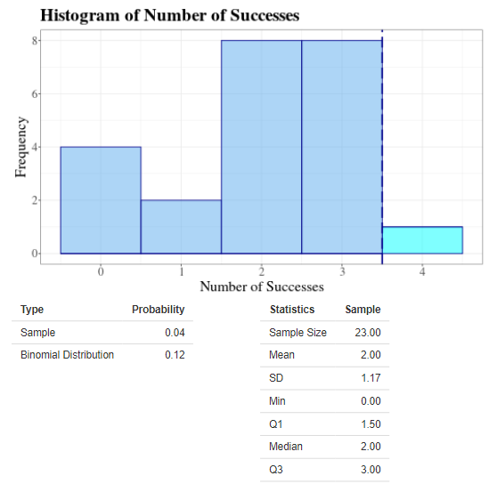

Settings A
Figure 3: Interpreting the Output
Whenever you select the models from the panel, you will see statistical output in a form of a histogram. Use it to analyze the data.
Instructors Note: Go to faculty resources to access student data
1D: Example 
In the image to the left, we have created a simple roller coaster.
- The first function (the green line) shows the lift ramp of a roller coaster. Here we entered a simple linear function (y = 5 +1x). At the start of the roller coaster (x = 0), people would load at a height of y = 5. Typically, a coaster will have some type of conveyor to get you to the top of the coaster, then gravity will carry you through the rest of the coaster.
- The equation entries require that the ending x value of the first equation is the starting value of the next equation. This ensures that there are no horizontal gaps in the coaster.
- The Graph and Math Check buttons allow us to verify that the coaster will work. To be continuous the y value of the first function when x = 20 must equal the y value of the second function when x = 20. This ensures that there are no vertical gaps in the coaster.
- The second function is quadratic, allowing the coaster to have a smooth curve. If two linear equations are put next to each other, the graph would have a sharp V-shaped curve, meaning that it would not be differentiable (and not safe to ride).
- In order to be differentiable the slope of the first line and the slope of the second line must also be equal at x = 20.
- Here the second and third functions are the same (except for the x-axis), this is not necessary, just two equations could be listed and the cells in the last row can all be blank. To get more points, more curves are needed.
In this version of the game, there are some restrictions:
- You can enter 1, 2, or 3 functions.
- The x-axis must go from 0 to 50
- The height of the coaster must always be greater than 0
- Before building your coaster, you should use the Math Check button to ensure that your functions are continuous and differentiable.
- Your score, which is based on elevation changes, only starts after your coaster starts changing direction. In other words, if you just draw a straight line that only goes up, your score will be 0.
Part 1E: Get Curious
- 1.7 Evaluate your class scores. Sometimes it can take up to 60 minutes for your class data to show in the
App, here. After your instructor confirms enough class
data is available, answer the following questions:
- In the App above, use the GroupID assigned to your class. Use the summary statistics button to identify the mean, median, and sample size of your class data.
- Compare the histogram of your class data to the histogram when we use “all” as the Group ID. Are the center, variability, and shape similar?
- What was the best score in your class? If there are 20 people in your class (20 games played), would you be surprised if one person got a “psychic” result by getting 5 or more correct? Explain your reasoning.
- 1.8 How does the number of cards influence our results? Take another psychic test, here, with 10 attempts. However,
in this new test click the options tab to select 2 cards per attempt instead of 5 cards per attempt.
- In the first game, the probability of success was 1/5 = 0.2. What is the probability of success when there are 2 cards per attempt?
- When you have 10 attempts, with 2 cards each, how many successes would you expect to get?
- Use the App above to estimate how many successes would be needed before the result might be considered unusual.
- 1.9 In 2019, USA Today published an article discussing two marine lab manatees (Buffet and Hugh)
attempting to predict the Super Bowl winner. Watch the video here. Each manatee had a 50% chance of selecting
the winner.
- Buffett had correctly picked 9 winners from 2008-2018, while Hugh had only picked 6 winners. Does this mean you should expect Buffett to be better at predicting the winner of the 2019 Super Bowl?
- Use the App above to estimate how likely it is to get 9 out of 11 attempts correct. Since the Psychic game doesn’t allow us to play with 11 attempts, click the binomial distribution option under Histograms for a more accurate estimate.
- The USA Today article also lists other animals predicting the Super Bowl, such as Fiona the Hippo, Kiki the Lioness, and April the Giraffe. When thousands of animals are used to predict the Super Bowl, explain why it is NOT surprising for a few to be correct often.
- 1.10 Your friend Eli claims he can tell the difference between Coke and Pepsi. However, you are skeptical.
You design a test where Eli guesses between two cups, each containing one drink, repeated 10 times.
- State the null and alternative hypotheses.
- If the null hypothesis is true, would you be surprised if Eli got 7 out of 10 correct? Use the App to explain your reasoning.
- In this test, Eli got 9 out of 10 correct. Use the App to find the p-value for this test. Based on this p-value, explain whether or not you have strong evidence to support the idea that Eli can taste the difference between the two.
- 1.11 How does the number of attempts (or sample size) influence our conclusions? Use the App to find the
following probabilities for the psychic game. For this question, we may not have enough psychic game data,
so use the binomial distribution option to get a more reliable histogram and probability.
- With 5 cards and 10 attempts, how likely is it for a player to get 40% or more correct (4 or more out of 10 correct guesses)?
- With 5 cards and 20 attempts, how likely is it for a player to get 40% or more correct (8 or more out of 20 correct guesses)?
- With 5 cards and 50 attempts, how likely is it for a player to get 40% or more correct (20 or more out of 50 correct guesses)?
- Explain the pattern you see from Questions 1.11a – 1.11c. Why would you expect a larger number of attempts to influence the probability of getting 40% or more.
- 1.12 In 2016, the American Statistical Association posted a statement to address the many misconceptions
and misuses of the p-value in published research.
- The first principle described in this statement says, “P-values can indicate how incompatible the data are with a specified statistical model.” Use the Pepsi-Coke example (Question 1.10) to explain how a small p-value provides evidence against the null hypothesis (where our statistical model assumed p = 0.5).
- The second principle states, “P-values do not measure the probability that the studied hypothesis is true, or the probability that the data were produced by random chance alone.” Use the Pepsi-Coke example (Question 1.10) to explain how a p-value larger than 0.10 does not prove Eli has no ability to differentiate between the two colas.
- 1.13 In the App we see that over 10,000 games have been played the original psychic game, using 5 cards
and 10 attempts.
- Estimate the proportion of all the games played that have scores of 5 or more.
- If there are 100 students in your class, how many would you expect to get a score of 5 or more (while assuming the null hypothesis is true)?
- If there are 40 students in your class who played the original psychic game, explain why it would not be surprising for at least one student to get a score that leads to a p-value < 0.05, even when no one in the class has psychic abilities.
- Explain why it is not appropriate for someone to play the original psychic game 100 times and then use only their best score to “show evidence” that they are psychic.
- Terms such as p-hacking, data dredging, data fishing, or data snooping can all be used to describe when data is manipulated to create hypothesis tests with small p-values, when there are no meaningful conclusions. Tyler Vigen has created a website here that demonstrates one type of data manipulation focusing on the “multiple comparison problem.” In essence, this means a researcher conducts numerous hypothesis tests, then publishes only the tests with small p-values. Choose one graph from Tyler Vigen’s site and explain how this is an example of p-hacking.
References
Shannon, Joel. "Adorable Animals Across the Nation Are Making Super Bowl Predictions." USA Today, Feb. 2019, www.usatoday.com/story/news/nation/2019/02/03/animals-predict-super-bowl-outcome/2756507002/.
Wasserstein, R. L., and Nicole A. Lazar. "The ASA’s Statement on P-Values: Context, Process, and Purpose." The American Statistician, vol. 70, no. 2, 2016, amstat.tandfonline.com/doi/full/10.1080/00031305.2016.1154108#d1e167.